❮
❯
Nature Walk
Click the Next Arrow to Begin
Instructions
You've been stuck inside for a long time and need to get out and go on an adventure!
Along the way, you'll encounter some plants and wildlife. Pick the ones that are safe
for you to interact with in order to win points!
Scenario One
You've decided to start the adventure by walking on a nearby trail. About a mile in,
you encounter two snakes. How exciting! Which one is safer for you to pass by?
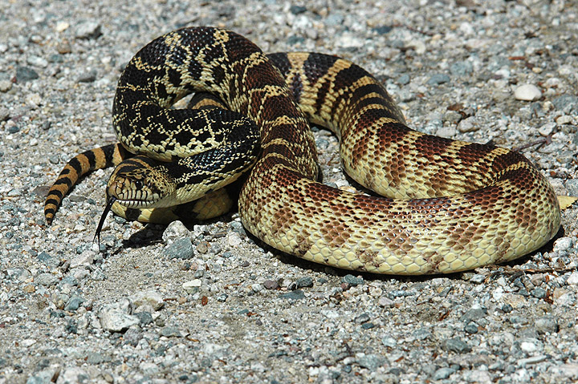
CORRECT!
The bullsnake, while harmless,
looks similar to the rattlesnake
at first glace, and even shakes
its tail in an effort to mimic it.
Yay health points!
WRONG!
The rattlesnake should be
avoided if you don't want a
pricey trip to the hospital!
You lose health points.
1/10
Scenario Two
You've made it past the snakes, but the weather is changing. Quick! Find some shelter
to avoid a brief hail storm! Which tree is safer?
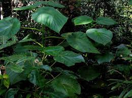
WRONG!
The gympie gympie plant may
look harmless, but it contains
bristles that have reportedly
led people to commit suicide.
You lose health points, and your rash
may take up to a year to heal 🤕
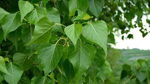
CORRECT!
The black poplar tree is a safe
choice to stand under for a quick
escape. Yay health points!
2/10
Scenario Three
The storm is over and the frogs, excited about the newfound moisture, are coming out
onto the trail. Which frog is less worrisome?
CORRECT!
The mimic poison frog mimics the
look of poison dart frogs to avoid
predation. In the wild, it is still
mildly toxic, but you still get/maintin your healthcare points!
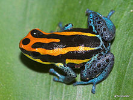
WRONG!
The poison dart frog has fatal
amounts of poison in the form of
alkaloid toxins. You lose health points.
3/10
Scenario Four
Maybe it's time to leave the trail for a bit. You walk into a
nearby meadow to admire the flowers. Which one can you admire up close?
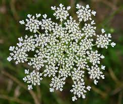
CORRECT!
Queen Anne's Lace is harmless but
has many lookalikes that the same
cannot be said for. Health points for you!
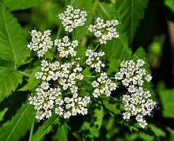
WRONG!
Like wild parsley and carrots, water
hemlock looks a lot like queen anne's lace.
However, it is often fatal to the people
and animals that eat it. You're lucky all you
lost was health points!
4/10
Scenario Five
Flowers are lovely, but with them comes bugs. Which fly is better
to have land on you?
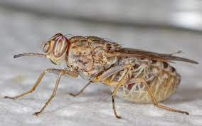
WRONG!
The tsetse fly is responsible for millions
of deaths and is the vector for the parasite
that causes trypanosomiasis, also known as
sleeping sickness. You lose health points.
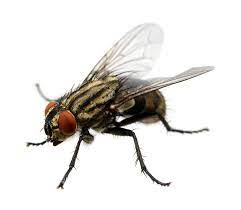
CORRECT!
The common house fly is gross and carries
many germs, but it is generally safe enough
to encounter. You gain/keep health points.
5/10
Scenario Six
You're away from the flies and want to keep looking at the
flowers. Which ones should you smell?
CORRECT!
The bush island poppy poses no threat. You've got
health points!
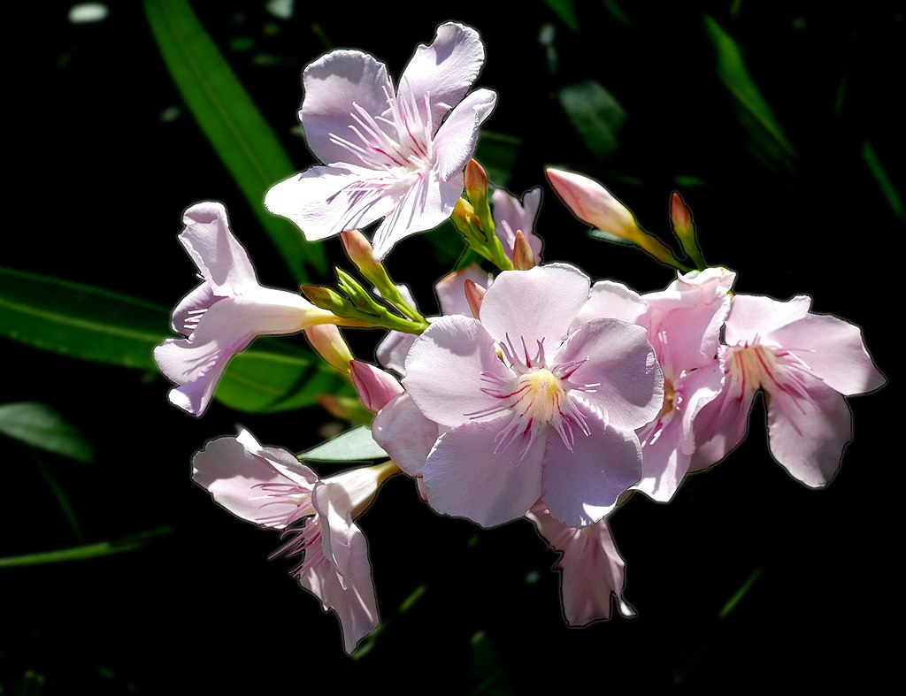
WRONG!
The oleander is notoriously dangerous. It's
best to avoid this plant, no matter how
pretty it is. No health points for you.
6/10
Scenario Seven
While sitting with the flowers, somethiny shiny catches your
eye. It's two beetles stuck on their backs! Which one can
you flip over with your finger?
WRONG!
The Spanish fly secretes the toxin
cantharidin which will either burn or
kill those who come into contact with it.
You lose health points and are reminded not to
touch shiny objects.
CORRECT!
The tansy beetle is happier eating
tansy than going around burning things.
More health points!
7/10
Scenario Eight
You've been sitting long enough, and realize there is
water beyond the meadow. At the water's edge, you see more
fun flowers. Which ones should you inspect more closely?
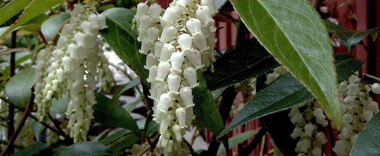
CORRECT!
The fetterbush looks funny, but is safe!
Collect health points!
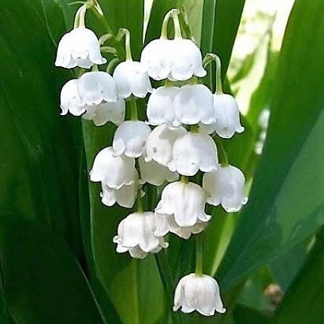
WRONG!
The Lily of the Valley has many toxic cardiac
glycosides and should not be consumed. Best to
stay away from the plant and any animals that may
have eaten it, even though it is in the asparagus
family! You lose health points.
8/10
Scenario Nine
You're all flowered out for the day and want to walk along
the water. You find two starfish! Which one wouldn't hurt
you if you accidentally brushed against it (ever so gently, of course)?
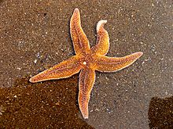
CORRECT!
The common starfish is unlikely to harm
you. Collect health points!
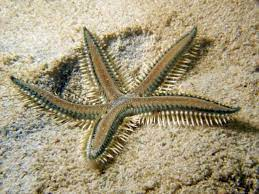
WRONG!
The comb star has tetrodotoxin, a neurotoxin
found in several aquatic species. This toxin
normally causes death by means of respiratory
failure in those who have been exposed to a
high enough amount of it. You lose health points.
9/10
Scenario Ten
You leave the starfish and almost trip over two snails.
Which one is safer to be near?
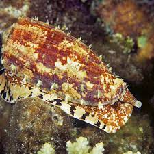
WRONG!
The geography cone snail is the most
toxic of the cone snails, and can
kill those who come into contact with it.
You lose health points!
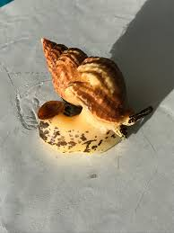
WRONG!
The common whelk probably wishes it was dangerous, as
it is actually quite fragile and is widely consumed
by humans. Yay health points!
10/10
YOU MADE IT!!!
That was a trecherous day. Maybe you should stay inside for awhile.